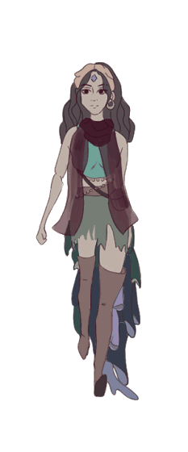

Arcana
Arcana is a 2D card-based action RPG following the journey of a faithless fortune teller.
Arcana is made in Unity and is available on Itch.io.
Roles
Co-Creative Director
Co-Game Designer
Co-Narrative Designer
Artist
Animator
Contributions
Developed game concept and narrative
Designed and iterated upon systems and character abilities based on usability feedback
Designed characters and in-game assets
Created animations in Unity
Key Features
Explore the carnival and meet the rogue Arcana who are your only ticket back home.
Employ the unique abilities of the fortune teller’s tarot deck, then summon the Arcana to fight and prove your worth in battle.
Quirky dialogue, characters, and abilities.
Magical soundtrack.